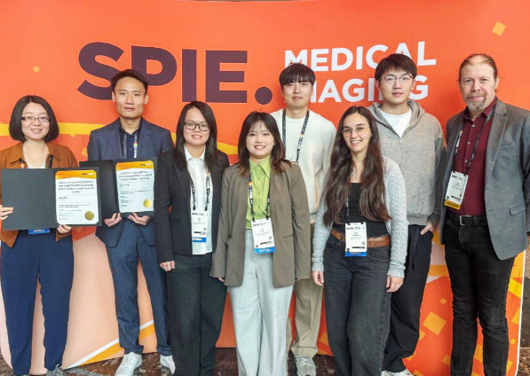
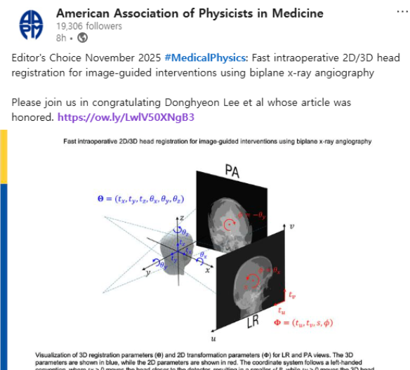
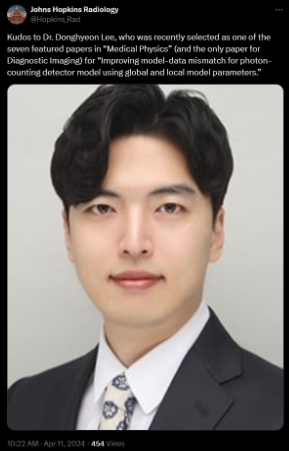
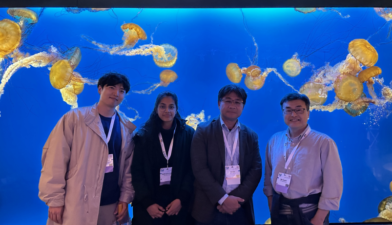
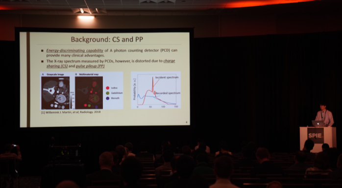
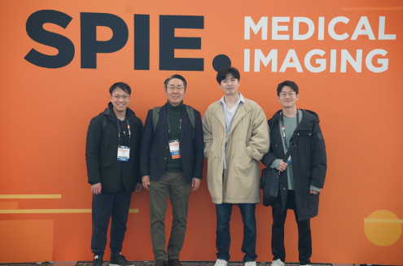

Donghyeon's Activities & News
Mar 2026
Birth of my son, Seha
Feb 2026
Conference participation: SPIE Medical Imaging 2026, Vancouver, Canada

Jan 2026
My paper "Fast intraoperative 2D/3D head registration for image-guided interventions using biplane x-ray angiography" was recently published in Medical Physics and selected as Editor's Choice!

Aug 2025
My second first-author IEEE TMI (IF:9.8, JCR 97.9%) paper "Calibration Method for Reducing Ring Artifacts in Energy Bin Images for Photon-Counting CT" has been published
Feb 2025
Joined the IMPACT Lab. at University of Pennsylvania as a postdoctoral fellow
Jan 2025
Awarded for exceptional contributions as a reviewer by the Journal of Radiation Protection and Research in 2024
Jan 2025
Gave an online talk at Sogang University
Jun 2024
Completed the teaching certificate course from JHU Teaching Institute
Mar 2024
My paper is selected as one of the seven highlighted papers in the February 2024 issue of Medical Physics

Feb 2024
My paper "Improving model–data mismatch for photon-counting detector model using global and local model parameters" has been published in Medical Physics
Nov 2023
Conference participation: IEEE NSS/MIC/RTSD 2023 conference, Vancouver, Canada

Oct 2023
Ran 10k in Baltimore Running Festival (PR: 56 mins)
Feb 2023
Conference participation: SPIE Medical Imaging 2023, San Diego, USA


Oct 2022
Ran 5k in Baltimore Running Festival (PR: 24 mins)
Sep 2022
Received Postdoctoral Fellowship (Nurturing Next-generation Researchers) from National Research Foundation of Korea (~$33,000)
Aug 2022
Jul 2022
Conference participation: AAPM 2022, Washington, USA
Jun 2022
Conference participation: CT Meeting 2022, Baltimore, USA
Apr 2022
Joined the KU Lab. at Johns Hopkins University as a postdoctoral fellow
Sep 2021
Defended my Ph.D. dissertation at KAIST